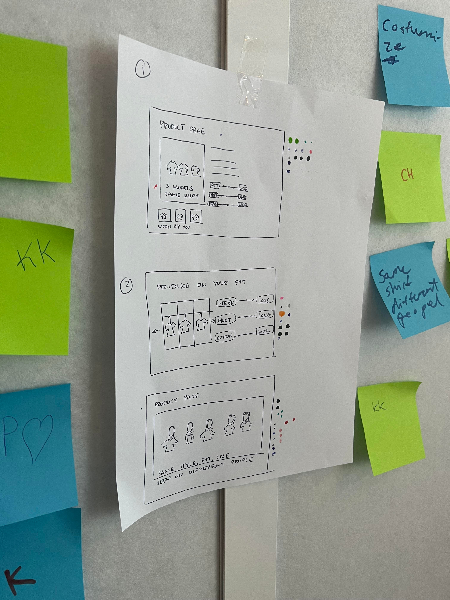
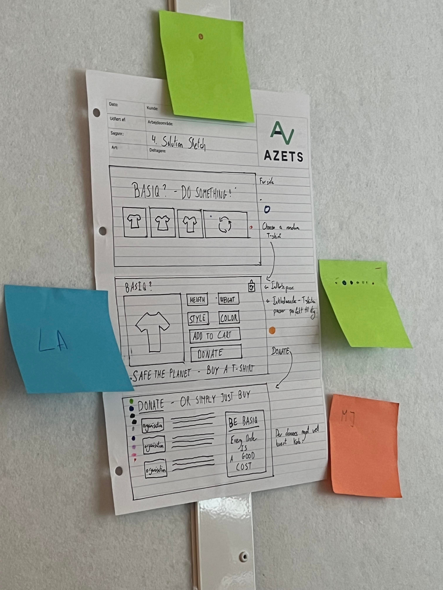
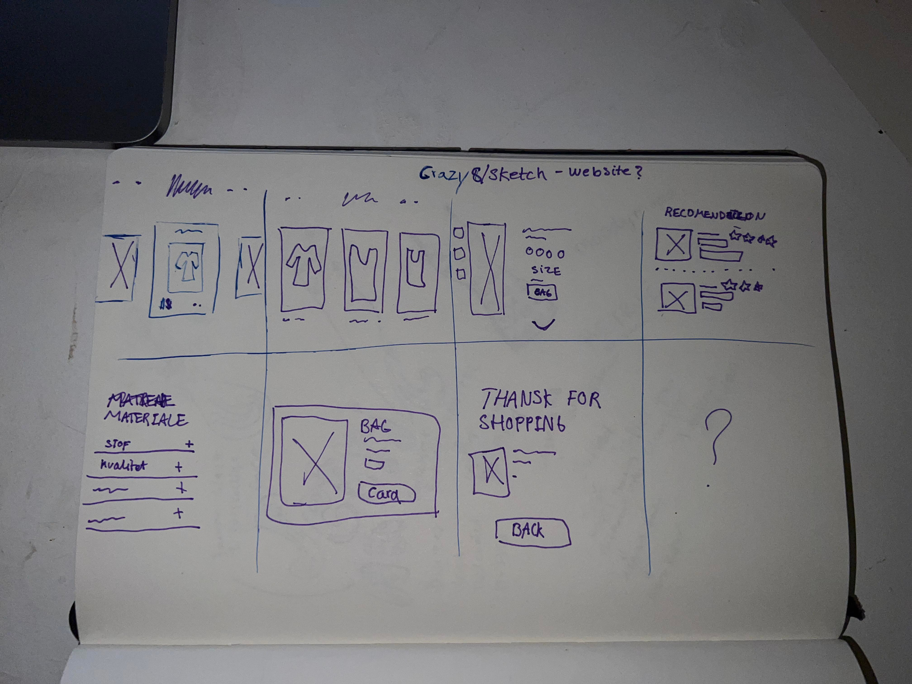
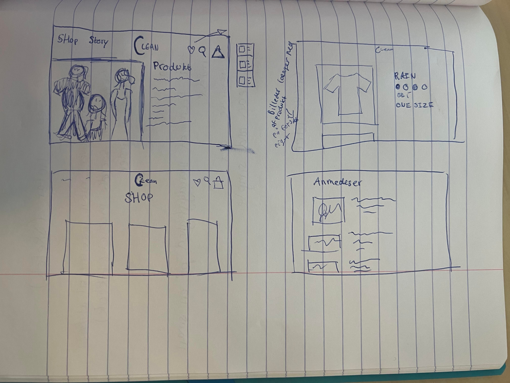
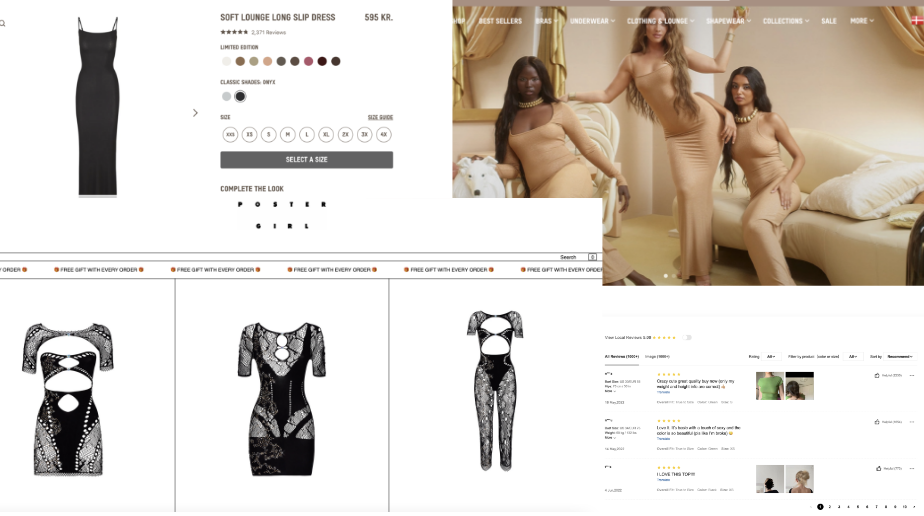
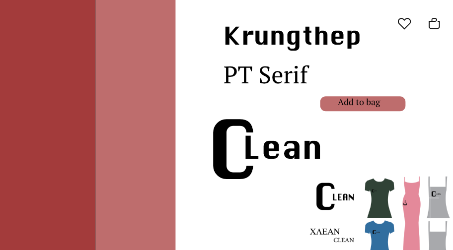
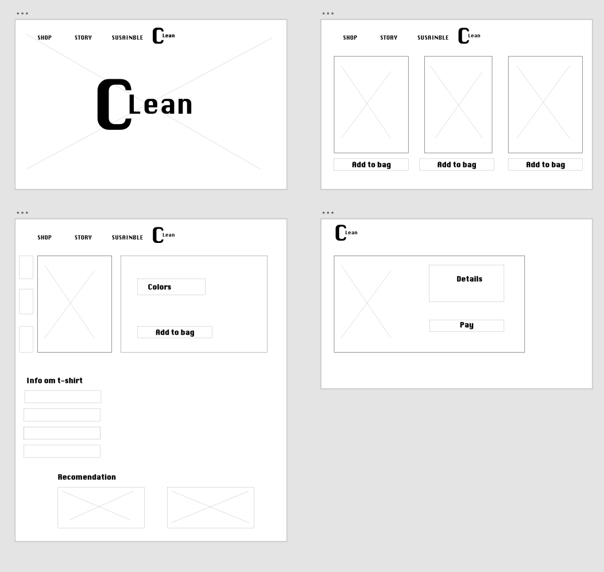
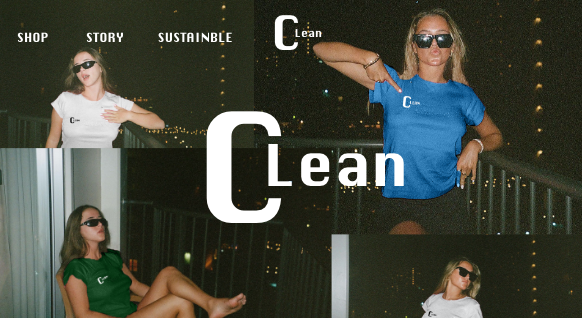

03
↓
Grundlæggende UX
I denne opgave arbejde vi med digitale brugergrænseflader. Vi introduceret til testmeoden: Desk research, Observation, Survey og Interview. som jeg også senere brugte på tema 5. Ved brug af metoden hjalp det mig at få en forståelse for brugeren og udvikle t-shirt produketet, som skulle sælges på nettet. Opgaven blev lavet på Adobe XD, som jeg senere skulle pitche
⌄
Data og research indsamling
Med dette tema skulle vi udføre en række metoder som desk research,
observation, survey og interview
Desk research: Lærte jeg til at samle viden fra
nettet omkring bæredygtighed og t-shirt produktion.
Observation: Lærte jeg til at samle insigter ved
at observere en handling uden at deltage aktivt
Survey: Lærte jeg at lave et spørgerskema med gode
spørgsmål der blev sent ud til relevante brugere.
Interview: Lærte jeg at få en dybdegående viden om
brugeren.
SE mere research og dataindsamling →
______________________________________________________________________________________________________________
Ideudvikling og tidligere prototype
Styrker visualisering for designprocessen, og skaber en god vision for ens koncept.
Artmusuem:
 Crazy 8/Sketch:
 __________________________________________________________________________________________________________________________
Løsning
Moodbord:
Style tile:
Wireframes:
Forside:
_______________________________________________________________________________________________________________________________________________________
Konklusion
I dette tema tog jeg mine færdigheder fra tema 2 som, moodboard, style
tiles og wireframes. Derudover var research metoderne også mega
læreigt. At komme mere i dybden med tøjproduktion yderligere, at se
hvor meget det hjalp mig på min ideudvikling, og af at kunne
kommuikere med brugeren, gjorde også at processen blev tydeligere.
På adobe XD lærte vi at lave lave prototype som jeg synes var mega
smart. At man kunne navigere rundt som en rigtig hjemmeside og se sit
design komme til liv.